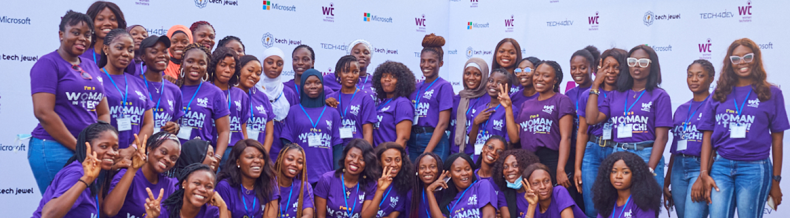

About Queen Koders
In an ever-evolving landscape of technology, a dynamic convergence of brilliant minds has emerged, redefining the very essence of innovation and progress. Enter a collective force of women from multifaceted backgrounds, uniting under the banner of technology to not just disrupt the industry but to reshape its very core.
This amalgamation of talent and diversity forms a mosaic of experiences, perspectives, and expertise. From software engineers to AI specialists, cybersecurity experts to data analysts, these women bring an array of skills and knowledge to the table. Their unity stands as a testament to the power of collaboration amidst diversity, breaking barriers and challenging stereotypes that have lingered in the tech realm for far too long.